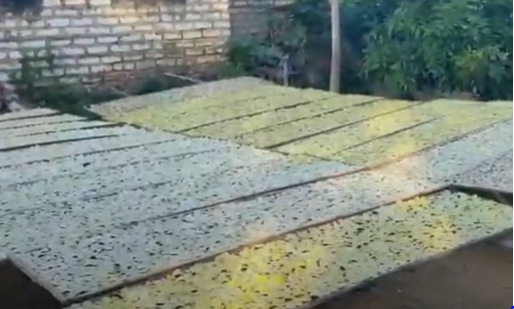

Proses Pembuatan Kripik Singkong UD.Potre Koneng

Proses Pembuatan kripik dari singkong Sampai jadi kripik siap makan
1. siapkan singkong yang berkualitas baik
2. kupas singkong
3. basuh singkong sampai bersih
4. potong singkong sehingga berbentuk kripik
5. rendam singkong yang sudah dikupas kurang lebih 1 sd 2 hari
6. setelah direndam basuh kembali singkong sampai bersih
7. jika sudah bersih singkong sampai matang
8. jika sudah matang kita masuk ke proses pemetaran
9. setelah itu jemur singkong sampai kering
10.lalu kumpulkan singkong yang sudah kering kedalam karung
11.setelah itu goreng singkong yang sudah kerning sampai matang
12.setelah matang kripik dibumbui sampai merata
13.dan kripik siap dikemas dan dipasarkan